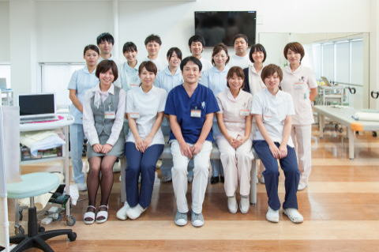

〒811-0213 福岡市東区和白丘2-3-7
TEL 092-605-6006 / FAX 092-605-6007

- 医療雑誌に紹介されました。
以下に内容を一部を抜粋して紹介します。 -
２０１０年１０月に開院した福岡市のまつもと整形外科クリニックは、疾患を幅広くカバーし、あらゆる年齢層の患者さんに対応している。院長の松本大成氏は「患者さんを自分の家族や友人と思って診療をする」をモットーに、徹底した地域医療の実践に力を尽くしている。
- 内部がよく見えるガラス張りのリハビリ室
-
まつもと整形外科に入って最初に目に飛び込んでくるのが、大きなガラスの向こうに広がるリハビリ室だ。受付や待合室からも内部がよく見える。「天井も高くしていて、外からも光が入るよう、明るく開放的な空間にしました。ガラス越しにどのような治療をしているかわかるので、リハビリではどのようなことをするのだろうと緊張されている患者さんや、お子さんを連れてきたお母さん方など患者さんのご家族にも安心していただけます」と松本院長はその狙いを話す。
同クリニックでは、患者さんへの優しい対応を常に心掛けている。受付、医療事務のスタッフは、クリニックの窓口として笑顔を絶やさず、看護師は、医師に言えないことでも言いやすい身近な存在として患者さんに寄り添う。
また、６人の理学療法士とともに、スポーツ障害の予防や治療にも積極的に取り組んでいる。とくに力を入れているのは野球による肩や肘の障害の予防だ。
勤務医時代から野球少年の整形外科への来院が多いことに驚き、予防医学の重要性を痛感、開院したら何らかの取り組みをしたいと考えていた。今は小・中学生の近隣野球クラブと連携し、診療はもちろん練習方法のアドバイスもしている。「体幹をうまく使ってケガをしないボールの投げ方をすることが大切。そうすると、結果的に凄いボールを投げることができる。投球フォームの動画を撮って説明するなどして、親御さんや野球クラブの指導者に伝わるように工夫しています」
- 理学療法士がボランティアで積極的に地域活動
-
同クリニックでは理学療法士による地域でのボランティア活動も活発だ。近隣の幼稚園に出向き、偏平足にならないための予防運動の指導をしている。「偏平足のお子さんは踏ん張る力が弱いため、小学校高学年や中学生になって部活動をすると疲労骨折を起こしやすい。幼児のうちから予防しておくことが大切です」と松本氏はその意義を語る。また、民生委員と連携、公民館などの会場にして、高齢者向けに運動機能を維持するための体操やストレッチの指導も行っている。
さらに、同クリニックのリハビリ室を会場にして月に１回、近隣のクリニックや病院に勤める理学療法士が集まって勉強会が開催されている。多い時は３０人ほどが集う。
「これらは、予防医学、健康増進の観点から、地域のクリニックならではの活動だと思います。意欲の高い理学療法士がそろっているので、地域活動や勉強会は当クリニックの理学療法士が自発的に取り組んでいるものです。わたしの目指している地域医療が、チームで実践できているように感じています」と松本氏は語る。
- 先進的な機器を活用しその場で診断・治療に入る
-
一方、先進的な機器による診療も、同クリニックの特徴となっている。DXA法によって全身の骨密度を測定できる装置は、通常大学病院や基幹病院などにしかないものだ。骨粗鬆症の患者さんに対しては、半年に１回、DXA法による検査を実施している。
フルデジタル超音波診断装置も導入していて、レントゲンでは発見しにくい筋肉や靭帯の損傷、子供の骨折、軟部腫瘍などの診断・評価に威力を発揮している。
また、一般のクリニックにはない自動血球数CRP測定装置、生化学自動分析装置といった血液検査の機器も備えている。「血液検査の結果が３０分でわかります。これらの機器を導入したのは、検査がその場ですぐにできて、結果もすぐわかるようにしたかったからです。会社員の方や熱心にスポーツをしているお子さんなどは時間に余裕がありません。診察に来たその日に診断して、すぐに適切な治療に入れるのは、大病院にはないクリニックの良さでしょう」
なお、MRI検査が必要な場合は、徒歩数分の位置にある福岡和白病院と連携している。まつもと整形外科クリニックから電話で予約、その日のうちに検査を受けられる。検査後すぐに患者さんは検査結果の画像データを持参して再び同クリニックに訪れ、診断を受ける仕組みだ。
地域に根差して、さまざまな取り組みを行っている同クリニックだが、今後は高齢化社会に対応するために何ができるかを真剣に考えているという。
- 